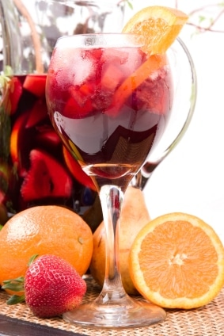
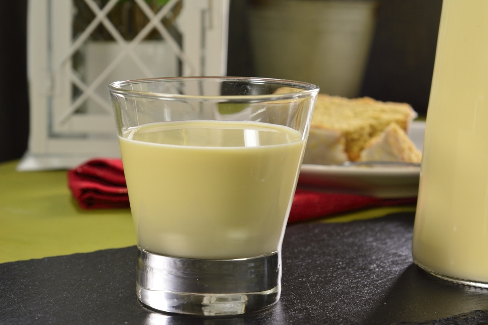
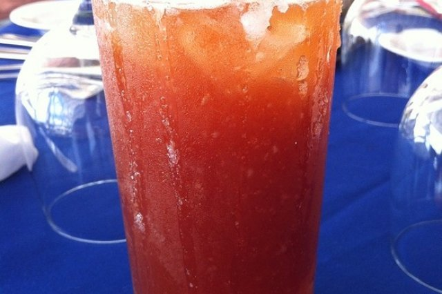
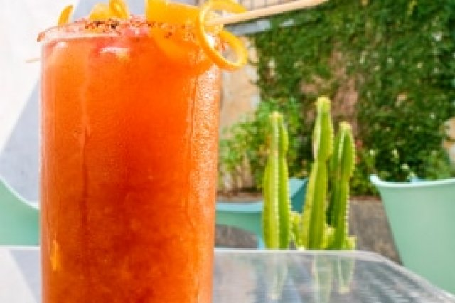

Bebidas Mexicanas
Bebidas Mexicanas
Sangria Mexicana
Ingredientes
- 4 limones
- 1 taza de azúcar
- 1/2 litros de vino tinto
- 1 litro de agua
- hielos, al gusto
Preparación
- En una jarra grande se mezcla el azucar en el agua hasta que esta se disuelva.
- Se le agrega al agua el jugo de limón y el vino.
- Se le agrega el hielo y se sirve fría.
Rompope
Ingredientes
- 3 tazas de leche entera
- 7 yemas de huevo, San Juan
- 1 taza de azúcar
- 2 tazas de crema para batir
- 1/3 tazas de bourbon
- 1/3 tazas de brandy
- 1 cucharada de esencia de vainilla
Preparación
- Hierve la leche en una olla.
- En un recipiente hondo bate las yemas San Juan® con el azúcar y agrega lentamente la leche mientras continua mezclando.
- Regresa la mezcla a la olla y cocina a fuego bajo 7 minutos moviendo constantemente hasta que espese.
- Cuela el rompope para eliminar cualquier grumo y vierte en un recipiente hondo.
- Agrega la crema, el bourbon, el brandy y la vainilla.
- Deja enfriar y sirve.
Clamato con Chela
Ingredientes
- 1 bote de Clamato
- 2 botellas de cerveza, obscura o clara
- jugo de limón
- salsas inglesa
- jugos Maggi
- salsas tabasco
- sal
- pimienta negra, molido grueso
Preparación
- Toma un tarro de cerveza y pon un poco del jugo de limón en la orilla. Voltea el tarro y escárchalo con sal.
- Pon salsas y jugo de limón a tu gusto. La salsa tabasco te recomiendo que sea poco porque pica mucho.
- Sirve hasta la mitad con clamato y la otra mitad con la cerveza. Espolvorea un poco de pimienta. Listo!
Michelada
Ingredientes
- 1 cucharada de salsa tabasco
- 2 cucharadas de salsa inglesa
- 2 cucharadas de salsa maggi
- 2 cervezas claras, bien frías
- 2 limones, su jugo
- 6 cucharadas de chile piquín
- 3 cucharadas de sal
Preparación
- En un recipiente hondo mezcla la maggi, la inglesa, la tabasco y el jugo de limón.
- Escarcha dos vasos pasando el limón por las orillas del vaso y luego escarchándolo con una mescla del chile piquín y la sal.
- Vierte en cada vaso la mitad de la salsa y agrega 2-3 hielos.
- Vierte la cerveza en cada vaso.